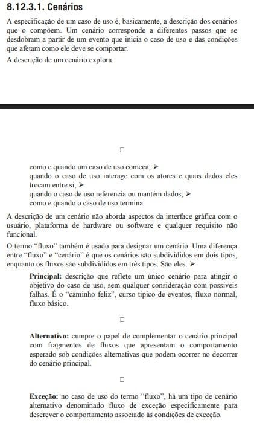

Cenários
Introdução
Este documento apresenta uma série de cenários desenvolvidos como parte do processo de engenharia de requisitos do aplicativo Cadastro Único (CadÚnico). Os cenários são descrições estruturadas de possíveis interações entre usuários e o sistema, com o objetivo de capturar comportamentos esperados, identificar requisitos e apoiar a validação das funcionalidades. Cada cenário contém informações sobre os atores envolvidos, o contexto da interação, pré-condições, fluxo principal de ações, pós-condições e exceções possíveis.
Cenários
Essa seção contém os cenários elaborados com base nos requisitos elicitados e observações realizadas durante a etapa de elicitação.
Cenário 1: Visualizar Benefícios
Nome do Cenário: Visualização de benefícios ativos
Ator principal: Usuário cadastrado
Contexto: O usuário deseja verificar se há algum benefício ativo vinculado ao seu cadastro no
CadÚnico, como Bolsa Família.
Pré-condições: O usuário já possui cadastro validado no CadÚnico e está autenticado no
aplicativo.
Fluxo principal:
1. O usuário acessa o aplicativo do CadÚnico.
2. Seleciona a opção “Meus Benefícios”.
3. O sistema busca as informações junto à base do governo.
4. É exibida uma lista de benefícios ativos, com nome do programa, status
(ativo/suspenso), valor recebido e data da última atualização.
Pós-condições: O usuário visualiza seus benefícios ativos de forma clara e atualizada.
Exceções:
- Caso o usuário não possua benefícios ativos, o sistema exibe uma mensagem
informativa.
- Se ocorrer falha de comunicação com o banco de dados, o sistema exibe uma mensagem
de erro.
Cenário 2: Alteração de Dados Cadastrais
Nome do Cenário: Atualização de dados pessoais e residênciais
Ator principal: Usuário cadastrado
Contexto: O usuário mudou de endereço e precisa atualizar suas informações no CadÚnico.
Pré-condições: O usuário está logado e seu cadastro já existe no sistema.
Fluxo principal:
1. O usuário acessa o aplicativo e entra na seção “Atualizar Cadastro”.
2. Informa que deseja alterar dados residenciais.
3. Atualiza endereço, telefone e informações de contato.
4. Confirma os dados e envia para análise.
- O sistema notifica que a atualização será verificada por um agente público.
Pós-condições: Os dados atualizados são enviados para análise, e o usuário recebe uma notificação de que a atualização está em processo.
Exceções: - Se o CPF estiver em inconsistência, o sistema bloqueia a alteração e exibe mensagem.
- Se o endereço informado for inválido (CEP inexistente), o sistema solicita correção.
Cenário 3: Realizar Cadastro no Aplicativo
Nome do Cenário: Primeiro cadastro no CadÚnico
Ator principal: Novo usuário
Contexto: O usuário nunca utilizou o CadÚnico e quer se cadastrar pelo aplicativo.
Pré-condições: O usuário possui documentos válidos e acesso à internet.
Fluxo principal:
1. O usuário instala e abre o aplicativo.
2. Seleciona “Fazer Primeiro Cadastro”.
3. Preenche os dados pessoais (nome, CPF, data de nascimento, endereço, composição
familiar).
4. Envia a solicitação.
5. O sistema gera um protocolo e informa que o usuário será contactado para validação.
Pós-condições: Um cadastro preliminar é criado e enviado para avaliação por um agente social.
Exceções:
- Se o CPF já existir no sistema, o cadastro é bloqueado e o sistema sugere login.
- Caso falte algum dado obrigatório, o app impede o envio e destaca os campos
incompletos.
Cenário 4: Conferir informações sobre benefícios
Nome do Cenário: Conferir Informações sobre benefícios
Ator principal: Usuário com ou sem autenticação.
Ator Secundário: Aplicativo CadÚnico.
Contexto: O usuário gostaria de verificar o funcionamento de demais benefícios disponíveis e descobrir se são aplicáveis para sua condição.
Pré-condições: Um celular smartphone ou computador funcional compatível com o aplicativo.
Fluxo principal:
1. O usuário abre o aplicativo.
2. O usuário acessa a tela de informações.
3. O aplicativo acessa sua base de dados local e apresenta os benefícios disponíveis.
4. O usuário acessa a tela específica sobre o benefício que gostaria de saber mais sobre.
5. O usuário lê as informações.
Pós-condições: O usuário obtém as informações.
Exceções:
- Navegador do computador e/ou celular estão desatualizados.
- O computador não possui internet.
Cenário 5: Verificar postos de atendimento
Nome do Cenário: Verificar postos de atendimento
Ator principal: Usuário com ou sem autenticação
Ator Secundário: Sistema CadÚnico, Aplicativo CadÚnico.
Contexto: O usuário gostaria de verificar o local e horário de postos de atendimento para poder ser atendido pessoalmente.
Pré-condições: Um celular smartphone ou computador funcional compatível com o aplicativo com acesso à internet.
Fluxo principal:
1. O usuário abre o aplicativo.
2. O usuário acessa a tela de informações sobre postos de atendimento.
3. O usuário insere estado, município e tipo de posto.
4. O sistema verifica as informações mais recentes e envia para o aplicativo.
5. O aplicativo apresenta as informações recebidas pelo sistema.
6. O usuário verifica os postos de atendimento.
Pós-condições: O usuário obtém as informações desejadas.
Exceções:
- Navegador do computador e/ou celular estão desatualizados.
- O usuário não possui acesso à internet.
- O usuário obtém um erro de interface e necessita resetar o aplicativo.
Cenário 6: Cadastro de Família
Nome do Cenário: Cadastrar nova família no sistema
Ator principal: Responsável familiar
Ator Secundário: Sistema CadÚnico, Aplicativo CadÚnico
Contexto: O responsável familiar deseja cadastrar sua família no Cadastro Único para acessar benefícios sociais.
Pré-condições: Um celular smartphone ou computador funcional compatível com o aplicativo com acesso à internet; documentos dos membros da família.
Fluxo principal:
1. O usuário acessa o aplicativo.
2. O usuário seleciona a opção “Cadastrar Família”.
3. O sistema solicita dados pessoais do responsável (nome, CPF, nascimento, endereço, telefone).
4. O usuário insere os dados dos demais membros da família (nome, parentesco, CPF/RG, data de nascimento, escolaridade, renda).
5. O sistema valida os dados e verifica duplicidades.
6. O usuário revisa e confirma o cadastro.
7. O sistema emite um protocolo e registra o envio para análise.
Pós-condições: A família é registrada como novo grupo familiar no sistema, com cadastro pendente de validação.
Exceções:
- CPF do responsável já cadastrado em outro grupo familiar.
- Dados de algum membro incompletos ou inválidos.
- Falha na comunicação com o sistema durante o envio do formulário.
Cenário 7: Filtrar Benefícios Sociais
Nome do Cenário: Filtrar informações sobre benefícios sociais
Ator principal: Usuário (autenticado ou não)
Ator Secundário: Sistema CadÚnico, Aplicativo CadÚnico
Contexto: O usuário deseja visualizar apenas os benefícios sociais que sejam relevantes ao seu perfil ou interesse, utilizando filtros para facilitar a busca.
Pré-condições: Um celular smartphone ou computador funcional compatível com o aplicativo com acesso à internet.
Fluxo principal:
1. O usuário abre o aplicativo.
2. O usuário acessa a seção “Benefícios Disponíveis”.
3. O sistema apresenta a lista completa de benefícios.
4. O usuário seleciona filtros como: tipo de benefício, público-alvo, localização, faixa de renda, entre outros.
5. O sistema processa os filtros aplicados.
6. O sistema exibe os benefícios que correspondem aos critérios selecionados.
7. O usuário visualiza os detalhes dos benefícios listados.
Pós-condições: O usuário acessa apenas os benefícios que correspondem aos filtros aplicados.
Exceções:
- Nenhum benefício corresponde aos filtros utilizados.
- Campos de filtro mal preenchidos ou inválidos.
- Falha de conexão impede a exibição dos resultados.
Cenário 8: Chatbot
Nome do Cenário: Uso de chatbot "Assistente Virtual" para auxílio e resolução de dúvidas
Ator principal: Usuário Cadastrado com dúvidas
Ator Secundário: Sistema de chatbot hipotético Assistente Virtual, Aplicativo CadÚnico,
Contexto: Um usuário possui alguma duvida relacionada a realização de uma operação ou benefício.
Pré-condições: Um celular smartphone ou computador funcional compatível com o aplicativo com acesso à internet.
Fluxo principal:
1. O usuário abre o aplicativo.
2. O usuário aperta no botão de login.
3. O usuário é autenticado pelo Gov.br.
4. O usuário acessa a opção "conversar com o assistente virtual".
5. O usuário é movido à tela de interface do assistente virtual.
6. O usuário realiza uma pergunta relacionada a benefícios ou operações no aplicativo.
7. O sistema virtual responde a dúvida.
Pós-condições: O usuário tem sua dúvida sanada.
Exceções:
- Usuário não está cadastrado e falha na parte de autenticação.
- Usuário não possui conexão com a internet em seu aparelho.
- O Assistente Virtual não possui a informação necessária, frustrando a tentativa de uso.
- O Assistente Virtual está em manutenção, frustrando a tentativa de uso.
Cenário 9: Modo Escuro
Nome do Cenário: Modo Escuro
Ator principal: Usuário.
Ator Secundário: Aplicativo CadÚnico,
Contexto: Um usuário está tentando utilizar o aplicativo em um ambiente de baixa luminosidade e a interface padrão é muito clara.
Pré-condições: Um celular smartphone ou computador funcional compatível com o aplicativo com acesso à internet.
Fluxo principal:
1. O usuário abre o aplicativo.
2. O usuário se incomoda com a luminosidade.
3. O usuário aperta em um botão descrito como "Modo Escuro".
4. O aplicativo atualiza a interface para utilizar cores mais frias.
Pós-condições: O usuário se sente mais confortável com o esquema de cores redefinido.
Exceções:
- O esquema de cores redefinido torna o usuário mais desconfortável no momento.
- O usuário não consegue encontrar o botão "Modo Escuro".
Cenário 10: Cadastro MEI
Nome do Cenário: Formalização do MEI via aplicativo do CadÚnico
Ator principal: Usuário com perfil elegível para formalização
Contexto: O usuário deseja formalizar sua atividade como Microempreendedor Individual diretamente pelo app do CadÚnico, aproveitando os dados já cadastrados.
Pré-condições: O usuário está logado no app CadÚnico, com dados pessoais e familiares atualizados.
Fluxo principal:
1. O usuário acessa o app CadÚnico e clica em “Quero ser MEI”.
2. O sistema recupera dados do cadastro e pré-preenche o formulário.
3. O usuário complementa com nome fantasia e atividade econômica.
4. Informa endereço comercial (se diferente do residencial) e confirma os dados.
5. Envia solicitação para análise e geração do CNPJ.
Pós-condições: A solicitação de cadastro MEI é enviada para o sistema da Receita Federal e o usuário pode acompanhar o status pelo próprio app.
Exceções:
- Se os dados estiverem desatualizados ou incompletos, o sistema solicita atualização antes de prosseguir.
- Se o CPF não for elegível (ex: já vinculado a outro CNPJ), o sistema informa impedimento.
Cenário 11: Informações MEI
Nome do Cenário: Consulta de situação MEI integrada ao CadÚnico
Ator principal: Usuário já formalizado como MEI
Contexto: O usuário deseja consultar dados do seu CNPJ MEI, verificar sua situação fiscal e obrigações dentro do app do CadÚnico.
Pré-condições: O usuário está logado e possui um CNPJ MEI vinculado ao seu CPF.
Fluxo principal:
1. O usuário acessa o app e seleciona a opção “Minha Situação MEI”.
2. O sistema exibe dados como: CNPJ, CNAE, status (ativo/inativo), débitos em aberto, DAS.
3. O usuário pode baixar documentos e gerar boletos.
4. O sistema fornece orientações se houver pendências.
Pós-condições: O usuário acessa sua situação atual como MEI sem precisar consultar múltiplos portais.
Exceções:
- Se o CNPJ estiver inativo, o sistema alerta com instruções para regularização.
- Em caso de falha de conexão com a Receita Federal, o sistema exibe erro temporário.
Cenário 12: Personalização MEI
Nome do Cenário: Ajuste de preferências de notificação e acessibilidade
Ator principal: Usuário MEI cadastrado no CadÚnico
Contexto: O usuário deseja configurar como receber notificações e adaptar a interface do app a suas necessidades.
Pré-condições: O usuário está logado no aplicativo CadÚnico.
Fluxo principal:
1. O usuário acessa o menu “Configurações”.
2. Escolhe como deseja receber lembretes: WhatsApp, SMS ou e-mail.
3. Ativa modo acessível (ex: fonte grande, alto contraste).
4. Salva as preferências.
Pós-condições: O sistema passa a respeitar as novas configurações nas próximas interações.
Exceções:
- Se o número de celular ou e-mail forem inválidos, o sistema alerta e solicita correção.
- Se o sistema de envio de mensagens estiver fora do ar, o app informa atraso nos lembretes.
Cenário 13: Integração MEI
Nome do Cenário: Consulta e sincronização automática com a base de dados do MEI
Ator principal: Sistema do CadÚnico
Contexto: O CadÚnico precisa acessar e manter atualizadas as informações do MEI vinculadas ao CPF do usuário, sem necessidade de inserção manual de dados.
Pré-condições: O usuário possui cadastro ativo no CadÚnico e tem um CNPJ MEI registrado na Receita Federal.
Fluxo principal:
1. O sistema do CadÚnico realiza integração periódica com a base da Receita Federal.
2. Identifica usuários com CNPJ MEI associado ao CPF no cadastro.
3. Recupera informações como: data de formalização, atividade principal, situação cadastral, pendências e débitos.
4. Atualiza automaticamente os dados no perfil do usuário no app CadÚnico.
5. Exibe aviso ou status atualizado ao usuário, caso ele acesse a área “MEI”.
Pós-condições: O perfil do usuário no CadÚnico reflete corretamente sua situação como MEI, com base em dados oficiais e atualizados.
Exceções:
- Se a conexão com a Receita Federal estiver instável, o sistema armazena tentativa e realiza nova sincronização posteriormente.
- Em caso de dados inconsistentes entre CPF e CNPJ, o sistema bloqueia a integração e emite alerta técnico para revisão manual.
Rastreabilidade
Essa seção apresenta a rastreabilidade Cenário-Requisito por meio da tabela 1. A legenda utilizada será a seguinte:
- CNX: Cenário número X.
- RFX: Requisito número X.
Cada tupla na Tabela 1 apresenta qual requisito funcional o cenário busca modelar.
| Cenário | Requisito |
|---|---|
| CN01 | RF24 |
| CN02 | RF05 |
| CN03 | RF02 |
| CN04 | RF24 |
| CN05 | RF16 |
| CN06 | RF06 |
| CN07 | RF23 |
| CN08 | RF26 |
| CN09 | RF38 |
| CN10 | RF11 |
| CN11 | RF12 |
| CN12 | RF13 |
| CN13 | RF10 |
Vídeo
O vídeo abaixo refere-se ao cenário, descrito neste artefato, realizada no Microsoft Teams:
Referências
CARLOS EDUARDO VAZQUEZ; GUILHERME SIQUEIRA SIMÕES. Engenharia de Requisitos. [s.l.] Brasport, 2016.

Histórico de Versão
| Versão | Data | Descrição | Autor | Revisor |
|---|---|---|---|---|
| 1.0 | 08/05/2025 | Criando a pagina e adicionando a introdução de cada tema | Ryan Salles, Julia Gabriela | João Pedro |
| 1.1 | 12/05/2025 | Criação de cenários e referências | Julia Gabriela | João Pedro |
| 1.2 | 12/05/2025 | Inserindo vídeo e atualizando formatação | Julia Gabriela | João Pedro |
| 1.3 | 12/05/2025 | Inserindo 2 novos cenários. | Ryan Salles | João Pedro |
| 1.4 | 13/05/2025 | Inserindo 2 novos cenários. | Julia Gabriela | João Pedro |
| 1.5 | 13/05/2025 | Adicionando introdução | Julia Gabriela | João Pedro |
| 1.6 | 13/05/2025 | Inserindo 2 novos cenários. | Ryan Salles | João Pedro |
| 1.7 | 14/05/2025 | Adição de autores a cada cenário | Ryan Salles | João Pedro |
| 1.8 | 16/05/2025 | Adição de 4 novos cenários | João Pedro, Ryan Salles | Julia Gabriela |
| 1.9 | 16/05/2025 | Corrigindo formatação e erros de digitação | João Pedro | Ryan Salles |